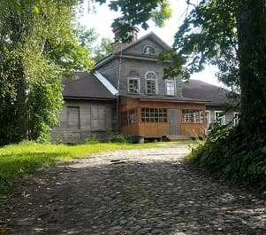
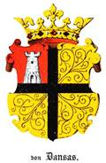
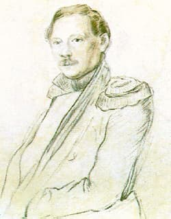
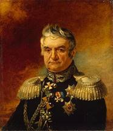

Проезжая Кемполово, каждый раз с интересом смотрю на дом на горе. Я никогда, нигде не встречал сохранившейся барской усадьбы "в диком виде". Настоящая помещичья усадьба с мезонином и маковкой, на господствующей высоте, в окружении вековых лип. А все равнодушны, никто на него не оглядывается. Попытки узнавать-расспрашивать успеха не приносили.
И вот, с удивлением узнал, что дед Данзаса, секунданта Пушкина, бежал из революционной Франции, где он был королевским прокурором Эльзаса и поселился в Кемполово. Ничего себе!? Из Страсбурга к нам в Кемполово! Из роскошного дворца в снега Ямбургского уезда! Понять можно - гильотина работала качественно. Звали его Жан Батист д'Анзас. Он стал родоначальником российской ветви семьи Данзасов.

>И вот, выясняется - его внук, секундант А.С.Пушкина, лицейский приятель поэта, подполковник Данзас до последнего момента пытался предотвратить дуэль. Доставил раненого поэта до дома и оберегал умирающего. Перед смертью Пушкин подарил ему свое кольцо с бирюзой. За участие в дуэли был приговорен к казни, которую Николай I заменил на заключение в Петропавловской крепости, сроком на два с половиной месяца, учитывая воинские заслуги.

>Следующим владельцем был тоже француз по рождению, герой войны 1812 года, генерал от инфантерии Федор Филиппович Довре

Хозяева менялись дальше, но похоже, дом оригинальный, постройки конца 18-го века, напоминает дом Пушкина в Михайловском. То, что он сохранился, из разряда чудес. Видел всю нашу кровавую историю: революцию, гражданскую, коллективизацию, голод, оккупацию, освобождение, да мало ли еще... И уцелел. На высоте, на перекрестке дорог.